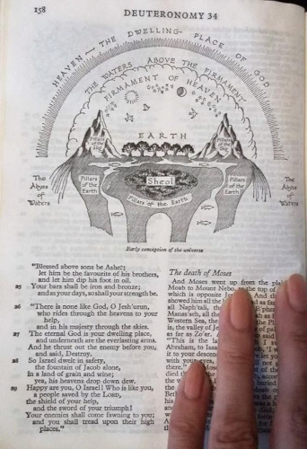

a crítica
A ideia de uma Terra plana tem crescido cada vez mais em nossa sociedade. No entanto, as pessoas que defendem essa ideia são frequentemente desvalorizadas e chamadas de loucas ou conspiracionistas pela sociedade moderna, quando, na verdade, estão apenas buscando a verdade sobre o mundo.
professores e até parentes não nos dão o benefício da dúvida. A tão famosa e injustiçada ideia da Terra plana é criticada por professores nas universidades, professores esses que chamam seus alunos de burros por apenas questionarem sobre o formato da Terra.
a terra plana na bíblia
Para começar a mostrar a essência da terra plana, nada melhor do que a Bíblia. Isso porque em diversos versículos bíblicos vemos referências à terra plana. A Bíblia é um livro terraplanista. Vou mostrar alguns versículos que comprovam isso.
versículos
- Gênesis 1:7: "E fez Deus o firmamento, e separou as águas que estavam debaixo do firmamento das águas que estavam sobre o firmamento; e assim foi."
- Gênesis 1:14: "E disse Deus: Haja luminares na expansão dos céus, para haver separação entre o dia e a noite; e sejam eles para sinais e para estações e para dias e anos."
- Isaías 30:26: "Além disso, a luz da lua será como a luz do sol, e a luz do sol será sete vezes maior, como a luz de sete dias, no dia em que o SENHOR atar a ferida do seu povo, e curar a chaga que ele causou."
- Marcos 13:24: "Mas, naqueles dias, depois daquela tribulação, o sol escurecerá, e a lua não dará a sua luz."
- Isaías 40:22: "Ele é o que está assentado sobre o círculo da terra, cujos moradores são para ele como gafanhotos; é ele quem estende os céus como cortina e os desenrola como tenda para neles habitar."
- Apocalipse 7:1: "E depois destas coisas vi quatro anjos que estavam sobre os quatro cantos da terra, retendo os quatro ventos da terra, para que nenhum vento soprasse sobre a terra, nem sobre o mar, nem contra árvore alguma."
- Apocalipse 1:7: "Eis que vem com as nuvens, e todo o olho o verá, até os mesmos que o traspassaram; e todas as tribos da terra se lamentarão sobre ele. Sim! Amém!"
significados
Gênesis 1:7:
A palavra hebraica traduzida como "firmamento" é "raqia", que denota algo firme ou batido. Na concepção antiga do mundo, acredita-se que o firmamento fosse uma espécie de abóbada sólida que sustentava as águas celestiais, acima das quais estavam as esferas celestes, incluindo o sol, a lua e as estrelas.
Gênesis 1:14:
Esse versículo declara que o sol e a lua são luminares feitos especificamente para separar o dia da noite, não para serem habitados, mas sim para marcar dias e anos, ao contrário do entendimento da ciência moderna, que afirma ter explorado a lua.
Isaías 30:26:
Esse versículo sugere discretamente que a lua possui luz própria na frase 'E a luz da lua será como a luz do sol'.
Marcos 13:24:
Novamente, a Bíblia afirma que a lua tem luz própria, contradizendo o modelo do globo que sugere que a luz da lua é apenas o reflexo da luz solar.
Isaías 40:22:
Este versículo é importante porque descreve claramente o formato real da terra na frase 'está assentado sobre o círculo da terra'. Um círculo é uma forma geométrica bidimensional que consiste em todos os pontos de um plano que estão a uma distância fixa, chamada raio, de um ponto central, chamado centro.
Apocalipse 7:1:
Os quatro cantos da terra são impossíveis em uma Terra esférica, já que um globo não possui cantos. Sendo assim, resta a interpretação dos cantos em uma Terra plana. É importante observar que em nenhum momento a Bíblia cita a palavra 'planeta', pois para ser considerado um planeta, é necessário que seja comprovado que gira.
Apocalipse 1:7:
Esse versículo fala sobre a segunda vinda de Jesus, que virá em uma nuvem, e todos o verão, algo que não seria possível em uma terra esférica, já que estaríamos divididos para baixo e para os lados do planeta.

Essa imagem é o modelo cosmológico bíblico citado em Gênesis, presente em algumas edições da Bíblia. No entanto, atualmente são poucas as Bíblias que incluem a representação da forma da Terra.
todos os povos acreditavam
"Antigamente, todos os povos acreditavam em uma Terra plana, parada, com um firmamento conforme escrito em Gênesis. A seguir, uma lista de alguns dos povos que acreditavam na Terra plana.
- Egípcios:Os antigos egípcios tiveram uma das civilizações mais duradouras e influentes da história, com uma rica mitologia e uma complexa cosmologia que incluía a crença em uma terra plana.
- Mesopotâmicos (sumérios, babilônios, assírios): Os povos da Mesopotâmia formaram algumas das primeiras civilizações do mundo, com uma cultura rica e uma visão de mundo que incluía a ideia de uma terra plana circundada por águas.
- Gregos Antigos: Os gregos antigos fizeram contribuições significativas para a filosofia, ciência e cultura, embora muitos dos primeiros filósofos gregos tenham concebido a Terra como plana.
- Hebreus Antigos: Os antigos hebreus, conforme retratados na Bíblia, tinham uma cosmologia que incluía a concepção de uma terra plana coberta por um "firmamento" sólido.
- Culturas da América Antiga (astecas, maias, incas): Civilizações como os astecas, maias e incas tinham uma visão de mundo que incluía a concepção de uma terra plana, frequentemente representada em suas mitologias e artefatos culturais.
O nosso dia a dia
Tudo o que observamos e enxergamos ao nosso redor parece indicar que a Terra é plana. Se hoje renascermos sem nenhuma manipulação da sociedade, nunca acharíamos que a Terra é redonda. Nossa visão seria de uma Terra plana e estacionária, assim como acreditavam os povos antigos.
Um avião voa a uma altitude de cerca de 12 quilômetros, porém, o interessante é que não vemos a curvatura da Terra a essa altitude. Mesmo que pesquisemos na internet, os dados mostram que a curvatura da Terra é notada a uma altitude de 10 a 15 quilômetros. Há uma incoerência nisso.
oque muda ser plana ou redonda?
contexto biblico
João 14:6 Respondeu-lhe Jesus: Eu sou o caminho, e a verdade, e a vida; ninguém vem ao Pai, senão por mim. Como descrito em João 8:44, Satanás é o pai da mentira. Se você acreditar em uma mentira, estará servindo a quem? A Satanás, sim ou não? O verdadeiro formato da Terra tem tudo a ver com isso, porque, como diz João 8:32, 'Conhecereis a verdade, e a verdade vos libertará'. Se você optar por seguir a mentira de que a Terra é uma bola, estará servindo ao demônio."
contexto economico
Em anos recentes, o orçamento anual da NASA tem sido em torno de 20 a 22 bilhões de dólares. Tudo isso para financiar uma mentira e mostrar aquele CGI podre da Terra."
criador da nasa era um nazista
Wernher von Braun foi um engenheiro alemão que desempenhou um papel significativo no desenvolvimento dos foguetes V-2 para o regime nazista durante a Segunda Guerra Mundial. Ele era membro do Partido Nazista e da SS, e liderou a equipe responsável por projetar e construir esses foguetes,que foram usados principalmente como armas de guerra, causando devastação em cidades como Londres. Após o fim da guerra,von Braun se entregou aos americanos e foi recrutado como parte da Operação Paperclip, um programa em que os Estados Unidos buscavam aproveitar o conhecimento técnico alemão em foguetes e mísseis. Wernher von Braun e Walt Disney eram conhecidos, o interessante é que Walt Disney tinha habilidades em produção cinematográfica, sendo essa sua especialidade. Isso me parece, no mínimo, suspeito, já que a filmagem da ida à Lua parece uma farsa.
A prova de que a Disney é uma empresa satânica está no próprio desenho feito por eles.
Clique no link: mensagens subliminares nos filmes da Disney.
farsas e evidencias
As maiores farsas do modelo do globo estão sendo cada vez mais expostas. Hoje, se você pesquisar sobre terra plana, verá na maior parte críticas. No YouTube, caso você pesquise 'terra plana', encontrará mais vídeos contra o modelo. Isso porque as pessoas que postam esses vídeos têm bastante visibilidade e acabam viralizando. É aquele ditado: 'mentiras se espalham mais rápido do que verdades'. Mas, para acabar de vez com qualquer dúvida sobre onde aprender sobre o modelo da terra plana, existem alguns canais como SUPER XANDÃO, que diz na cara tudo que você precisa saber. Tem também o canal "ALÉM DO HORIZONTE, que faz diversos experimentos comprovando nosso modelo, entre outros.
balão atmosférico
A Terra mostrada de cima é frequentemente exibida com uma curva, mas e se eu te disser que essa curva não é nada mais que um efeito de uma câmera chamada olho de peixe, que cria uma curva inexistente, Afinal, se houvesse realmente uma curva, essa câmera não seria necessária.
Abaixo, observe um vídeo de um balão atmosférico a 80 km, sem a câmera olho de peixe.
teste de curvatura
Quando vamos a uma praia e observamos objetos sumindo no horizonte, isso é algo interessante, mas existe uma explicação. Na verdade, há várias explicações, mas apenas uma é verdadeira. A explicação falsa é que os objetos somem por conta da curvatura da Terra. Isso é facilmente refutado por uma câmera chamada Nikon P1000, que possui um zoom extremamente alto. Quando levamos essa câmera para a praia e a utilizamos, conseguimos avistar objetos que supostamente deveriam estar abaixo da curvatura da Terra. Só isso já basta para destruir o modelo do globo. Mais uma vez, notamos uma incoerência.
james webb
Abaixo temos uma foto tirada pelo suposto Telescópio Espacial James Webb, que, por incrível que pareça, capturou um ponto de interrogação no espaço.
Essa imagem mostra o quão patético é o ser humano. Mesmo após isso, as pessoas continuaram acreditando. Essa foto mostra o Photoshop feito pelo James Webb.
Objetivo Principal
Por fim, nosso objetivo principal não é confrontar os 'globistas', mas sim trazer a verdade à tona. Vivemos e crescemos aprendendo que a Terra é uma bola molhada giratória de ponta cabeça e, quando contestamos isso, somos chamados de todo tipo de coisas. No entanto, a verdade é que, se conseguirmos provar que a Terra é plana para o mundo, estaríamos causando um dos maiores benefícios para a humanidade. Pararíamos de perder bilhões de dólares para a NASA e para estações espaciais, estaríamos seguindo em direção a um novo caminho, mostrando que o que está escrito na Bíblia é verdadeiro. Consequentemente, estaríamos desmascarando falsas teorias como as de Charles Darwin, Isaac Newton e Albert Einstein.